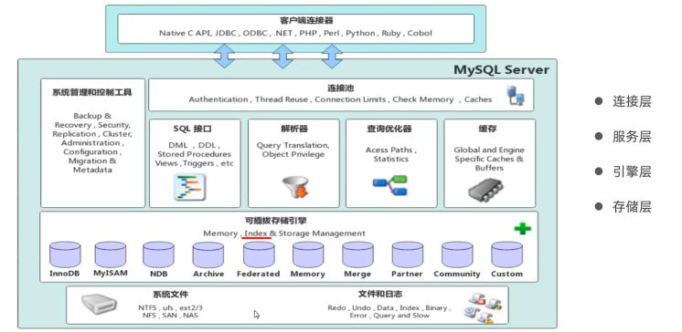
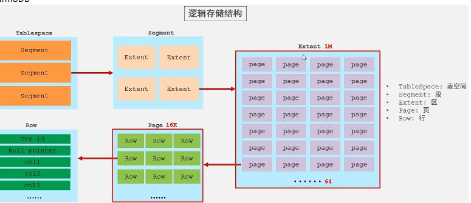

MySQL体系结构
连接层、服务层、引擎层、存储层

连接层：最上层是一些客户端和链接服务，包含本地sock 通信和大多数基于客户端/服务端工具实现的类似于 TCP/IP的通信。主要完成一些类似于连接处理、授权认证、及相关的安全方案。在该层上引入了线程 池的概念，为通过认证安全接入的客户端提供线程。同样在该层上可以实现基于SSL的安全链接。服务 器也会为安全接入的每个客户端验证它所具有的操作权限。
服务层： 第二层架构主要完成大多数的核心服务功能，如SQL接口，并完成缓存的查询，SQL的分析和优化，部 分内置函数的执行。所有跨存储引擎的功能也在这一层实现，如 过程、函数等。在该层，服务器会解 析查询并创建相应的内部解析树，并对其完成相应的优化如确定表的查询的顺序，是否利用索引等， 最后生成相应的执行操作。如果是select语句，服务器还会查询内部的缓存，如果缓存空间足够大， 这样在解决大量读操作的环境中能够很好的提升系统的性能。
引擎层： 存储引擎层， 存储引擎真正的负责了MySQL中数据的存储和提取，服务器通过API和存储引擎进行通 信。不同的存储引擎具有不同的功能，这样我们可以根据自己的需要，来选取合适的存储引擎。数据库 中的索引是在存储引擎层实现的。
存储层 数据存储层， 主要是将数据(如: redolog、undolog、数据、索引、二进制日志、错误日志、查询 日志、慢查询日志等)存储在文件系统之上，并完成与存储引擎的交互。
简介
存储引擎就是存储数据、建立索引、更新/查询数据等技术的实现方式 。存储引擎是基于表的，而不是 基于库的，所以存储引擎也可被称为表类型
查询建表语句
1 | show create table account; |
执行结果：
1 | CREATE TABLE `account` ( |
可以看到：
默认的引擎为
ENGINE=InnoDB： 在MySQL5.5 以后的默认存储引擎就是 Innodb。AUTO_INCREMENT=3：可以说明 id 是自增的，插入下一条数据 申请的 id 为 3。DEFAULT CHARSET=utf8mb4：当前表的默认字符集是 utf8mb4。COLLATE=utf8mb4_0900_ai_ci：排序方式
指定存储引擎
1 | CREATE TABLE 表名( |
查询当前数据库支持的存储引擎
1 | show engines; |
存储引擎特点
InnoDB
特点
- DML操作遵循ACID模型，支持事务；
- 行级锁，提高并发访问性能；
- 支持外键FOREIGN KEY约束，保证数据的完整性和正确性；
存储结构
InnoDB

- 表空间(TableSpace) : InnoDB存储引擎逻辑结构的最高层，ibd文件其实就是表空间文件，在表空间中可以 包含多个Segment段。
- 段(Segment) : 表空间是由各个段组成的， 常见的段有数据段、索引段、回滚段等。InnoDB中对于段的管 理，都是引擎自身完成，不需要人为对其控制，一个段中包含多个区。
- 区(Extent) : 区是表空间的单元结构，每个区的大小为1M。 默认情况下， InnoDB存储引擎页大小为 16K， 即一个区中一共有64个连续的页。
- 页(Page) : 页是组成区的最小单元，页也是InnoDB 存储引擎磁盘管理的最小单元，每个页的大小默 认为 16KB。为了保证页的连续性，InnoDB 存储引擎每次从磁盘申请 4-5 个区。
- 行(Row) : InnoDB 存储引擎是面向行的，也就是说数据是按行进行存放的，在每一行中除了定义表时 所指定的字段以外，还包含两个隐藏字段(后面会详细介绍)。
MyISAM
特点
- 不支持事务，不支持外键
- 支持表锁，不支持行锁
- 访问速度快
Memory
特点
- 内存存放
- hash索引（默认）
区别以及特点
| 特点 | InnoDB | MyISAM | Memory |
|---|---|---|---|
| 存储限制 | 64TB | 有 | 有 |
| 事务安全 | 支持 | —— | —— |
| 锁机制 | 行锁 | 表锁 | 表锁 |
| B+tree索引 | 支持 | 支持 | 支持 |
| Hash索引 | —— | —— | 支持 |
| 全文索引 | 支持（5.6版本之后） | 支持 | —— |
| 空间使用 | 高 | 低 | N/A |
| 内存使用 | 高 | 低 | 中等 |
| 批量插入速度 | 低 | 高 | 高 |
| 支持外键 | 支持 | —— | —— |
存储引擎选择
InnoDB: 是Mysql的默认存储引擎，支持事务、外键。如果应用对事务的完整性有比较高的要 求，在并发条件下要求数据的一致性，数据操作除了插入和查询之外，还包含很多的更新、删除操 作，那么InnoDB存储引擎是比较合适的选择。
MyISAM ： 如果应用是以读操作和插入操作为主，只有很少的更新和删除操作，并且对事务的完 整性、并发性要求不是很高，那么选择这个存储引擎是非常合适的。
MEMORY：将所有数据保存在内存中，访问速度快，通常用于临时表及缓存。MEMORY的缺陷就是 对表的大小有限制，太大的表无法缓存在内存中，而且无法保障数据的安全性。